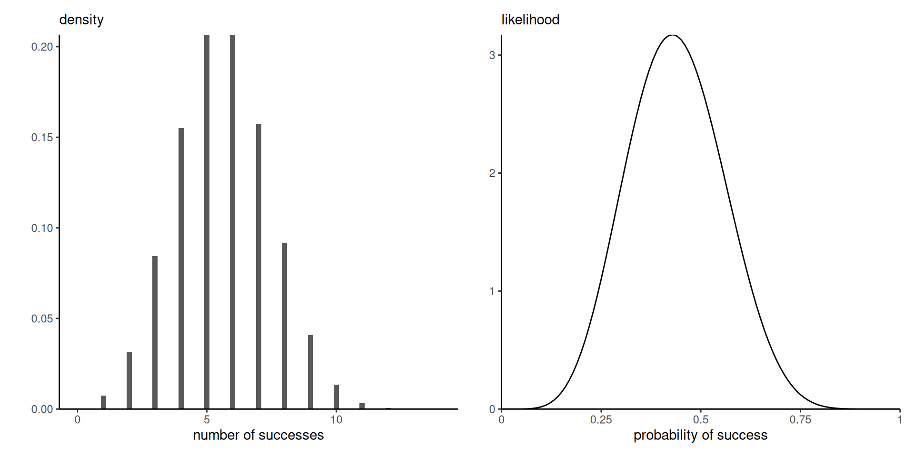
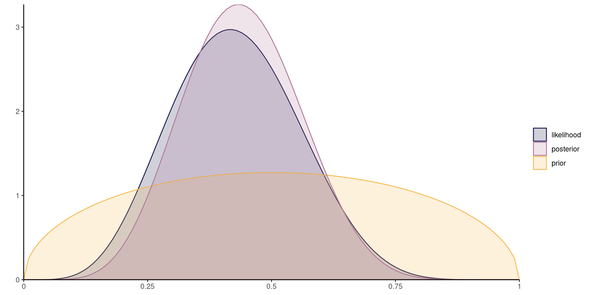
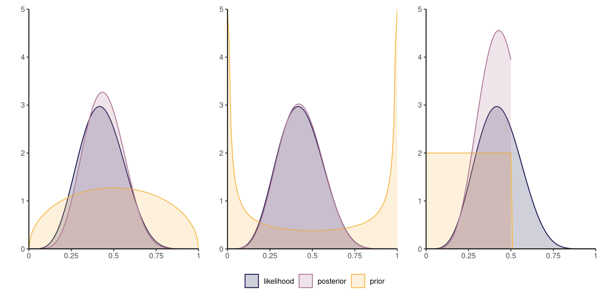
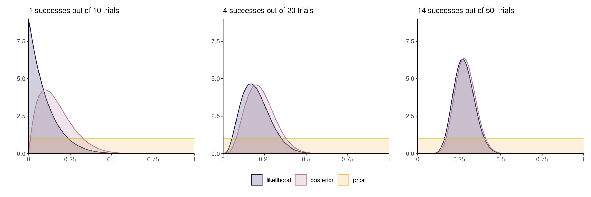
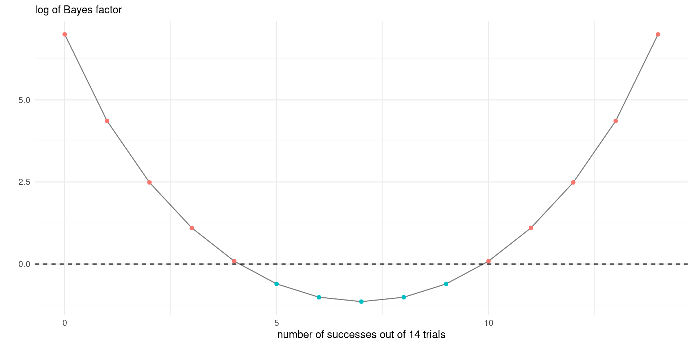
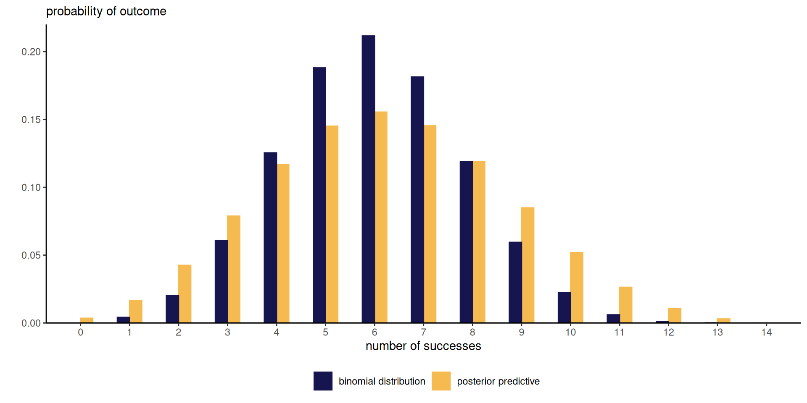
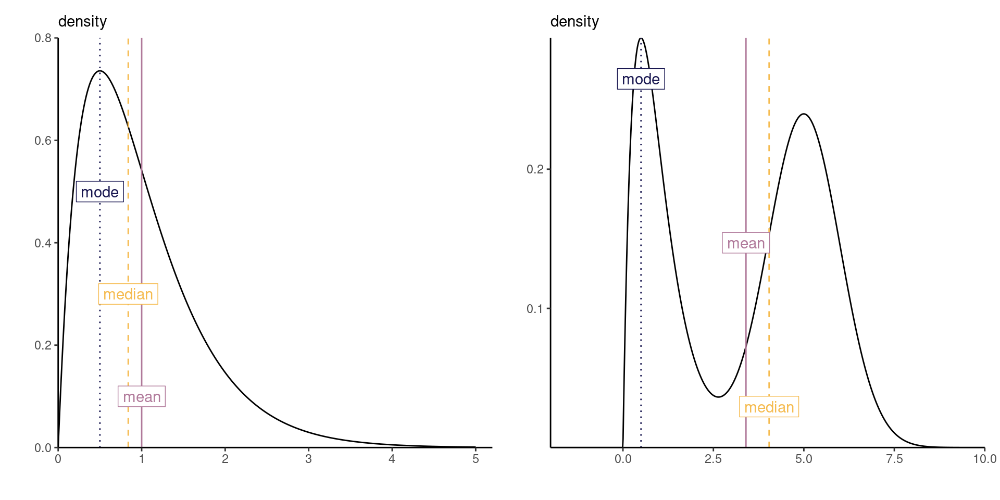
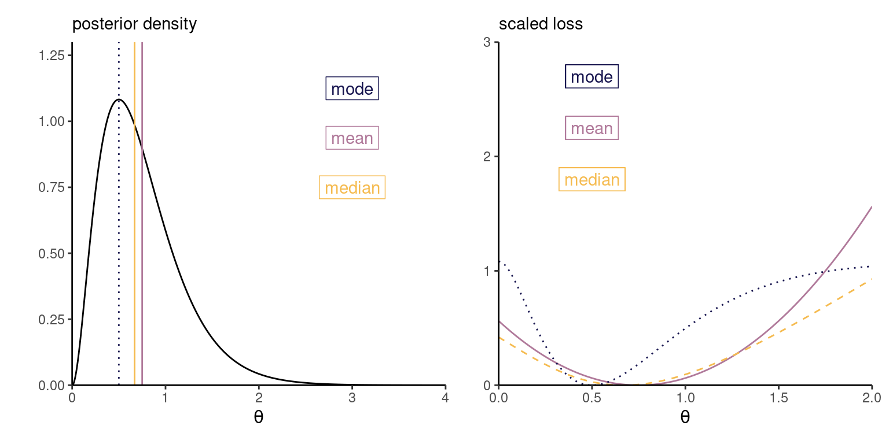
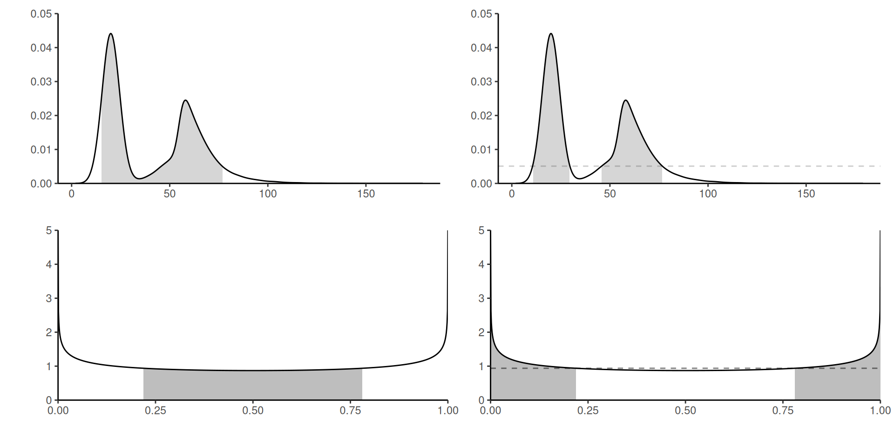

meaning that \[\color{#D55E00}{\text{posterior}} \propto \color{#0072B2}{\text{likelihood}} \times \color{#56B4E9}{\text{prior}}\]
Evaluating the marginal likelihood\(\color{#E69F00}{p(\boldsymbol{Y})}\), is challenging when \(\boldsymbol{\theta}\) is high-dimensional.
Updating beliefs and sequentiality
By Bayes’ rule, we can consider updating the posterior by adding terms to the likelihood, noting that for independent \(\boldsymbol{y}_1\) and \(\boldsymbol{y}_2\), \[\begin{align*}
p(\boldsymbol{\theta} \mid \boldsymbol{y}_1, \boldsymbol{y}_2) \propto p(\boldsymbol{y}_2 \mid \boldsymbol{\theta}) p(\boldsymbol{\theta} \mid \boldsymbol{y}_1)
\end{align*}\] The posterior is be updated in light of new information.
Binomial distribution
A binomial variable with probability of success \(\theta \in [0,1]\) has mass function \[\begin{align*}
f(y; \theta) = \binom{n}{y} \theta^y (1-\theta)^{n-y}, \qquad y = 0, \ldots, n.
\end{align*}\] Moments of the number of successes out of \(n\) trials are \[\mathsf{E}(Y \mid \theta) = n \theta, \quad \mathsf{Va}(Y \mid \theta) = n \theta(1-\theta).\]
The binomial coefficient \(\binom{n}{y}=n!/\{(n-y)!y!\}\), where \(n!=\Gamma(n+1)\).
Beta distribution
The beta distribution with shapes \(\alpha>0\) and \(\beta>0\), denoted \(\mathsf{beta}(\alpha,\beta)\), has density \[f(y) = \frac{\Gamma(\alpha+\beta)}{\Gamma(\alpha)\Gamma(\beta)}y^{\alpha - 1}(1-y)^{\beta - 1}, \qquad y \in [0,1]\]
expectation: \(\alpha/(\alpha+\beta)\);
mode \((\alpha-1)/(\alpha+\beta-2)\) if \(\alpha, \beta>1\), else, \(0\), \(1\) or none;
We write \(Y \sim \mathsf{binom}(n, \theta)\) for \(\theta \in [0,1]\); the likelihood is \[L(\theta; y) = \binom{n}{y} \theta^y(1-\theta)^{n-y}.\]
Consider a beta prior, \(\theta \sim \mathsf{beta}(\alpha, \beta)\), with density \[
p(\theta) = \frac{\Gamma(\alpha + \beta)}{\Gamma(\alpha)\Gamma(\beta) }\theta^{\alpha-1}(1-\theta)^{\beta - 1}.
\]
Density versus likelihood
The binomial distribution is discrete with support \(0, \ldots, n\), whereas the likelihood is continuous over \(\theta \in [0,1]\).

Figure 1: Binomial density function (left) and scaled likelihood function (right).
If the density or mass function integrates to 1 over the range of \(Y\), the integral of the likelihood over \(\theta\) does not.
Posterior density and proportionality
Any term not a function of \(\theta\) can be dropped, since it will absorbed by the normalizing constant. The posterior density is proportional to
\[\begin{align*}
L(\theta; y)p(\theta) & \stackrel{\theta}{\propto} \theta^{y}(1-\theta)^{n-y} \times \theta^{\alpha-1} (1-\theta)^{\beta-1}
\\& =\theta^{y + \alpha - 1}(1-\theta)^{n-y + \beta - 1}
\end{align*}\] the kernel of a beta density with shape parameters \(y + \alpha\) and \(n-y + \beta\).
The symbol \(\propto\), for proportionality, means dropping all terms not an argument of the left hand side.
Marginal likelihood
The marginal likelihood for the \(Y \mid P=p \sim \mathsf{binom}(n,p)\) model with prior \(P \sim \mathsf{beta}(\alpha, \beta)\) is \[\begin{align*}
p_{Y}(y) = \binom{n}{y} \frac{\mathrm{beta}(\alpha + y, \beta + n - y)}{\mathrm{beta}(\alpha, \beta)}, \quad y \in\{0, \ldots,n\}.
\end{align*}\] where \(\mathrm{beta}(\alpha, \beta) = \Gamma(\alpha)\Gamma(\beta)/\Gamma(\alpha+\beta)\) is the beta function.
Experiments and likelihoods
Consider the following sampling mechanism, which lead to \(k\) successes out of \(n\) independent trials, with the same probability of success \(\theta\).
Bernoulli: sample fixed number of observations with \(L(\theta; y) =\theta^k(1-\theta)^{n-k}\)
binomial: same, but record only total number of successes so \(L(\theta; y) =\binom{n}{k}\theta^k(1-\theta)^{n-k}\)
negative binomial: sample data until you obtain a predetermined number of successes, whence \(L(\theta; y) =\binom{n-1}{k-1}\theta^k(1-\theta)^{n-k}\)
Likelihood principle
Two likelihoods that are proportional, up to a constant not depending on unknown parameters, yield the same evidence.
In all cases, \(L(\theta; y) \stackrel{\theta}{\propto} \theta^k(1-\theta)^{n-k}\), so these yield the same inference for Bayesian.
For a more in-depth discussion, see Section 6.3.2 of Casella & Berger (2002)
Integration
We could approximate the \(\color{#E69F00}{\text{marginal likelihood}}\) through either
numerical integration (cubature)
Monte Carlo simulations
In more complicated models, we will try to sample observations by bypassing completely this calculation.
The likelihood terms can be small (always less than one and decreasing for discrete data), so watch out for numerical overflow when evaluating normalizing constants.
Numerical example of (Monte Carlo) integration
y <-6L # number of successes n <-14L # number of trialsalpha <- beta <-1.5# prior parametersunnormalized_posterior <-function(theta){ theta^(y+alpha-1) * (1-theta)^(n-y + beta -1)}integrate(f = unnormalized_posterior,lower =0,upper =1)
1.066906e-05 with absolute error < 1e-12
# Compare with known constantbeta(y + alpha, n - y + beta)
[1] 1.066906e-05
# Monte Carlo integrationmean(unnormalized_posterior(runif(1e5)))
[1] 1.061693e-05
Marginal posterior
In multi-parameter models, additional integration is needed to get the marginal posterior
Marginalization is trivial when we have a joint sample: simply keep the column corresponding to \(\theta_j\).
Prior, likelihood and posterior

Figure 2: Scaled Binomial likelihood for six successes out of 14 trials, \(\mathsf{beta}(3/2, 3/2)\) prior and corresponding posterior distribution from a beta-binomial model.
Proper prior
We could define the posterior simply as the normalized product of the likelihood and some prior function.
The prior function need not even be proportional to a density function (i.e., integrable as a function of \(\boldsymbol{\theta}\)).
For example,
\(p(\theta) \propto \theta^{-1}(1-\theta)^{-1}\) is improper because it is not integrable.
\(p(\theta) \propto 1\) is a proper prior over \([0,1]\) (uniform).
Validity of the posterior
The marginal likelihood does not depend on \(\boldsymbol{\theta}\)
(a normalizing constant)
For the posterior density to be proper,
the marginal likelihood must be a finite!
in continuous models, the posterior is proper whenever the prior function is proper.
Different priors give different posteriors

Figure 3: Scaled binomial likelihood for six successes out of 14 trials, with \(\mathsf{beta}(3/2, 3/2)\) (left), \(\mathsf{beta}(1/4, 1/4)\) (middle) and \(\mathsf{unif}[0,1/2]\) (right) priors and posterior density.
Role of the prior
The posterior is beta, with expected value \[\begin{align*}
\mathsf{E}(\theta \mid y) &= w\frac{y}{n} + (1-w) \frac{\alpha}{\alpha + \beta}, \\ w&=\frac{n}{n+\alpha+\beta}
\end{align*}\] a weighted average of
the maximum likelihood estimator and
the prior mean.
Posterior concentration
Except for stubborn priors, the likelihood contribution dominates in large samples. The impact of the prior is then often negligible.

Figure 4: Beta posterior and binomial likelihood with a uniform prior for increasing number of observations (from left to right).
Model comparison
Suppose that we have models \(\mathcal{M}_m\)\((m=1, \ldots, M)\) to be compared, with parameter vectors \(\boldsymbol{\theta}^{(m)}\) and data vector \(\boldsymbol{y}\) and prior probability \(\Pr(\mathcal{M}_m)\).
The \(\color{#c38f16}{\text{posterior odds}}\) for models \(\mathcal{M}_i\) vs \(\mathcal{M}_j\) is \[\begin{align*}
\color{#c38f16}{\frac{\Pr(\mathcal{M}_i \mid \boldsymbol{y})}{\Pr(\mathcal{M}_j \mid \boldsymbol{y})}} =
\color{#6e948c}{\frac{p(\boldsymbol{y} \mid \mathcal{M}_i)}{p(\boldsymbol{y} \mid \mathcal{M}_j)}}
\color{#122c43}{\frac{\Pr(\mathcal{M}_i)}{\Pr(\mathcal{M}_j)}}
\end{align*}\] equal to the \(\color{#6e948c}{\text{Bayes factor}}\)\(\mathsf{BF}_{ij}\) times the \(\color{#122c43}{\text{prior odds}}\).
Bayes factors
The \(\color{#6e948c}{\text{Bayes factor}}\) is the ratio of marginal likelihoods, as \[\begin{align*}
p(\boldsymbol{y} \mid \mathcal{M}_i) = \int p(y \mid \boldsymbol{\theta}^{(i)}, \mathcal{M}_i) p( \boldsymbol{\theta}^{(i)} \mid \mathcal{M}_i) \mathrm{d} \boldsymbol{\theta}^{(i)}.
\end{align*}\] Values of \(\mathsf{BF}_{ij}>1\) correspond to model \(\mathcal{M}_i\) being more likely than \(\mathcal{M}_j\).
Strong dependence on the prior \(p(\boldsymbol{\theta}^{(i)} \mid \mathcal{M}_i)\).
Must use proper priors.
Bayes factor for the binomial model
Consider two models with \(Y \mid P^{(i)}=p \sim \mathsf{binom}(n, p)\) and
\(P^{(1)}\sim \mathsf{unif}(0,1)\)
\(P^{(2)}\sim \mathsf{1}_{p=0.5}\).

Summarizing posterior distributions
The output of the Bayesian learning will be either of:
a fully characterized distribution (in toy examples).
a numerical approximation to the posterior distribution.
an exact or approximate sample drawn from the posterior distribution.
Bayesian inference in practice
Most of the field revolves around the creation of algorithms that either
circumvent the calculation of the normalizing constant
(Monte Carlo and Markov chain Monte Carlo methods)
provide accurate numerical approximation, including for marginalizing out all but one parameter.
Define the \(\color{#D55E00}{\text{posterior predictive}}\), \[\begin{align*}
p(y_{\text{new}}\mid \boldsymbol{y}) = \int_{\boldsymbol{\Theta}} p(y_{\text{new}} \mid \boldsymbol{\theta}) \color{#D55E00}{p(\boldsymbol{\theta} \mid \boldsymbol{y})} \mathrm{d} \boldsymbol{\theta}
\end{align*}\] and the \(\color{#56B4E9}{\text{prior predictive}}\)\[\begin{align*}
p(y_{\text{new}}) = \int_{\boldsymbol{\Theta}} p(y_{\text{new}} \mid \boldsymbol{\theta}) \color{#56B4E9}{p(\boldsymbol{\theta})} \mathrm{d} \boldsymbol{\theta}
\end{align*}\] is useful for determining whether the prior is sensical.
Analytical derivation of predictive distribution
Given the \(\mathsf{beta}(a, b)\) prior or posterior, the predictive for \(n_{\text{new}}\) trials is beta-binomial with density \[\begin{align*}
p(y_{\text{new}}\mid y) &= \int_0^1 \binom{n_{\text{new}}}{y_{\text{new}}} \frac{\theta^{a + y_{\text{new}}-1}(1-\theta)^{b + n_{\text{new}} - y_{\text{new}}-1}}{
\mathrm{Be}(a, b)}\mathrm{d} \theta
\\&= \binom{n_{\text{new}}}{y_{\text{new}}} \frac{\mathrm{Be}(a + y_{\text{new}}, b + n_{\text{new}} - y_{\text{new}})}{\mathrm{Be}(a, b)}
\end{align*}\]
Replace \(a=y + \alpha\) and \(b=n-y + \beta\) to get the posterior predictive distribution.
Posterior predictive distribution

Figure 5: Beta-binomial posterior predictive distribution with corresponding binomial mass function evaluated at the maximum likelihood estimator.
Posterior predictive distribution via simulation
The posterior predictive carries over the parameter uncertainty so will typically be wider and overdispersed relative to the corresponding distribution.
Given a draw \(\theta^*\) from the posterior, simulate a new observation from the distribution \(f(y_{\text{new}}; \theta^*)\).
npost <-1e4L# Sample draws from the posterior distributionpost_samp <-rbeta(n = npost, y + alpha, n - y + beta)# For each draw, sample new observationpost_pred <-rbinom(n = npost, size = n, prob = post_samp)
The beta-binomial is used to model overdispersion in binary regression models.
Summarizing posterior distributions
The output of a Bayesian procedure is a distribution for the parameters given the data.
We may wish to return different numerical summaries (expected value, variance, mode, quantiles, …)
The question: which point estimator to return?
Decision theory and loss functions
A loss function \(c(\boldsymbol{\theta}, \boldsymbol{\upsilon}): \boldsymbol{\Theta} \mapsto \mathbb{R}^k\) assigns a weight to each value \(\boldsymbol{\theta}\), corresponding to the regret or loss.
The point estimator \(\widehat{\boldsymbol{\upsilon}}\) is the minimizer of the expected loss \[\begin{align*}
\widehat{\boldsymbol{\upsilon}} &= \mathop{\mathrm{argmin}}_{\boldsymbol{\upsilon}}\mathsf{E}_{\boldsymbol{\Theta} \mid \boldsymbol{Y}}\{c(\boldsymbol{\theta}, \boldsymbol{v})\} \\&=\mathop{\mathrm{argmin}}_{\boldsymbol{\upsilon}} \int_{\boldsymbol{\Theta}} c(\boldsymbol{\theta}, \boldsymbol{\upsilon})p(\boldsymbol{\theta} \mid \boldsymbol{y}) \mathrm{d} \boldsymbol{\theta}
\end{align*}\]
Point estimators and loss functions
In a univariate setting, the most widely used point estimators are
mean: quadratic loss \(c(\theta, \upsilon) = (\theta-\upsilon)^2\)
median: absolute loss \(c(\theta, \upsilon)=|\theta - \upsilon|\)
mode: 0-1 loss \(c(\theta, \upsilon) = 1-\mathrm{I}(\upsilon = \theta)\)
The posterior mode \(\boldsymbol{\theta}_{\mathrm{map}} = \mathrm{argmax}_{\boldsymbol{\theta}} p(\boldsymbol{\theta} \mid \boldsymbol{y})\) is the maximum a posteriori or MAP estimator.
Measures of central tendency

Figure 6: Point estimators from a right-skewed distribution (left) and from a multimodal distribution (right).
Example of loss functions

Figure 7: Posterior density with mean, mode and median point estimators (left) and corresponding loss functions, scaled to have minimum value of zero (right).
Credible regions
The freshman dream comes true!
A \(1-\alpha\) credible region give a set of parameter values which contains the “true value” of the parameter \(\boldsymbol{\theta}\) with probability \(1-\alpha\).
Caveat: McElreath (2020) suggests the term ‘compatibility’, as it
returns the range of parameter values compatible with the model and data.
Which credible intervals?
Multiple \(1-\alpha\) intervals, most common are
equitailed: region \(\alpha/2\) and \(1-\alpha/2\) quantiles and
highest posterior density interval (HPDI), which gives the smallest interval \((1-\alpha)\) probability
If we accept to have more than a single interval, the highest posterior density region can be a set of disjoint intervals. The HDPI is more sensitive to the number of draws and more computationally intensive (see R package HDinterval). See Hyndman (1996) for computations.
Illustration of credible regions

Figure 8: Density plots with 89% (top) and 50% (bottom) equitailed or central credible (left) and highest posterior density (right) regions for two data sets, highlighted in grey.
# Highest posterior density intervals - note values are outside of the support!(hdiD <- HDInterval::hdi(density(postsamp), credMass =1-alpha, allowSplit =TRUE))
begin end
[1,] -0.04331573 0.2800577
[2,] 0.47816030 1.1423868
attr(,"credMass")
[1] 0.89
attr(,"height")
[1] 0.3898784
References
Casella, G., & Berger, R. L. (2002). Statistical inference (2nd ed.). Duxbury.
Finetti, B. de. (1974). Theory of probability: A critical introductory treatment (Vol. 1). Wiley.